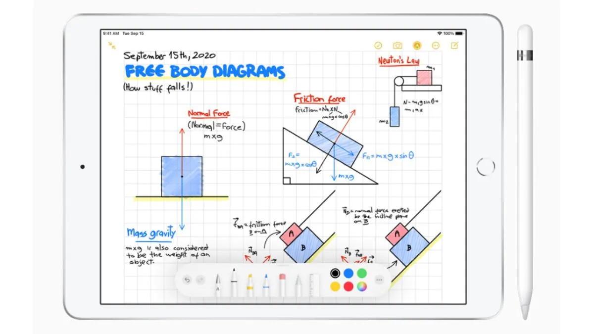

iPad
Delightfully capable.
Surprisingly affordable.
The new iPad combines tremendous capability with unmatched ease of
use and versatility. With the powerful A12 Bionic chip, support for
Apple Pencil and the Smart Keyboard, and the amazing new things you
can do with iPadOS 14, now there’s even more to love about iPad.
Kick some
serious
task
With iPad, getting work done is all hustle and no
hassle. Edit a document while researching something
on the web and making a FaceTime call to a colleague
at the same time. Attach a full‑size Smart Keyboard for
comfortable typing1. And for tasks that require more
precision, support for a trackpad or mouse
complements the familiar Multi‑Touch experience
of iPad.
Paired with the power of iPadOS, Apple Pencil makes
note‑taking with iPad a breeze. Do things like sign
paperwork, mark up a document, or sketch out an idea.
It feels as natural to use as a regular pencil, but with so
much more capability.
Learn your
lesson the
fun way

Let your curiosity run wild with iPad. The App Store is
the best place to discover apps that let you get a leg
up in geometry, learn a new language, and attend
virtual classes. You can even use augmented reality to
learn something exciting, like watching the history of
spaceflight unfold in your living room or making
characters from your favorite book literally leap off
the page.
Live your
best extra life.
Draw something
drawsome
iPad lets you express your creative ideas in so many ways.
Whether you’re taking notes, designing a logo, or just sketching
up a storm, Apple Pencil is the perfect tool to bring your vision to
life. It’s designed to feel intuitive and let you draw with
pixel‑perfect precision.
Shoot from
the hip
Edit with
your finger

No matter how you capture your photos and videos — with the
8MP back camera or the FaceTime HD camera on iPad, with an
iPhone, or with a digital camera — you’ll love editing them on
the large, immersive screen of your iPad. Take advantage of the
machine learning capabilities to enhance your photos. Once
you’ve got your perfect shot, share it to your social feeds or s
end it to friends with a tap.
Your home theater
Home optional
Everything you watch on iPad looks and sounds awesome, thanks to
the 10.2‑inch Retina display and stereo system. With the Apple TV
app, you’ll have access to popular streaming services, must‑watch
shows, and blockbuster movies. And when you buy a new iPad, it
includes a year of Apple TV+, our streaming service featuring original
shows and movies from the world’s best storytellers.5 Now all you have
to do is remember the popcorn.
iPadOS
does even
More
iPadOS delivers a distinct experience that
enhances the unique capabilities of iPad.
New note‑taking features make handwriting
as powerful as typed text, shape recognition
makes your drawings more precise, and now
you can handwrite in any text field
with Scribble.